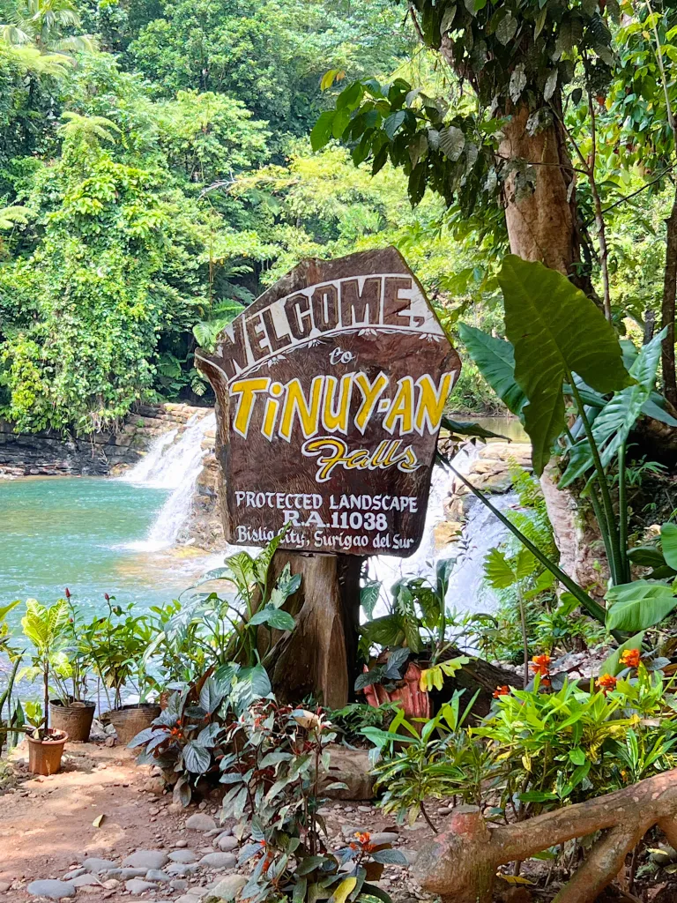
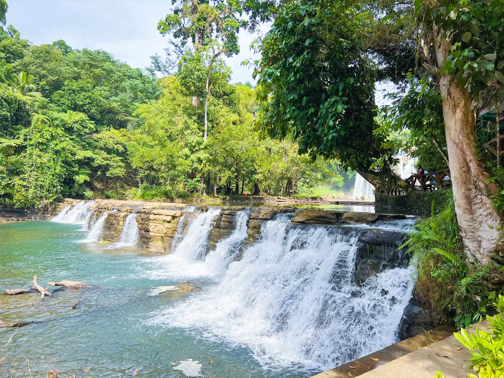

Surigao Del Sur have popular natural wonders! You may know some of it but now hey, there are more to discover!


The Hinatuan Enchanted River, also known as the Hinatuan Sacred River, is a stunning deep spring river located in Barangay Talisay, Hinatuan, Surigao del Sur. It flows into the Philippine Sea and is considered one of the most iconic natural attractions in the Philippines.
Here is another natural wonder for you!



Bislig City Often called the "Niagara Falls of the Philippines," Tinuy-an Falls stands approximately 55 meters high and spans 95 meters wide, making it one of the widest waterfalls in the country.